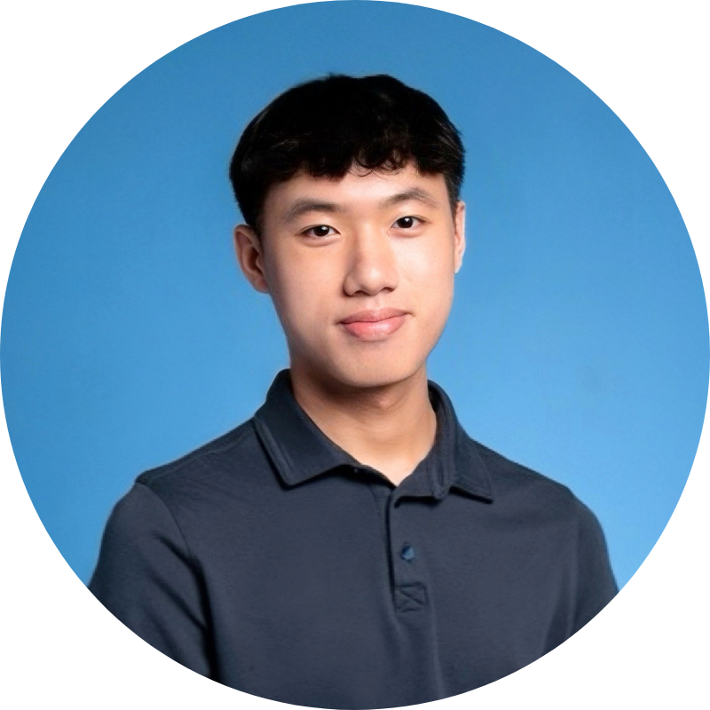

Adam Yan
- Chicago, IL
- Email: ayan2@hawk.illinoistech.edu
Professional Headshot
Below is my yearbook photo from this year.

Career Objective
Motivated high school senior with experience coordinating projects and collaborating in team environments. Interested in business analytics, accounting and further development of professional and leadership skills.
Education
High School Diploma
William Jones College Preparatory High School
August 2023 - Present
- Relevant Coursework: AP Macroeconomics, AP Computer Science A, Calculus I, AP Research, AP Seminar
- Involvements: Asian American Club, National Computer Honor Society, National Chinese Honor Society, Key Club, HEAAL, Green Team
- GPA: 5.2/4.0 (Weighted), 3.8/4.0 (Unweighted)
Associate of Arts in Business/Finance
Harold Washington College
September 2024 - Present
- Relevant Coursework: Financial Accounting, Statistics, Business Management, Microeconomics, Paralegal Studies
- GPA: 4.0/4.0
Experience
Summer Legal Intern, City of Chicago, Department of Environment - Chicago, IL
June - August 2026
- Analyzed databases to support the department's annual pollution accounting and financial reporting process.
- Learned about ongoing projects and policy initiatives through City departmental meetings, building familiarity with City government and environmental policy.
- Researched economic and environmental impacts of data center development, embedding community concerns, policy initiatives, and legal documents.
Intern, Chicago Youth Service Corps - Chicago, IL
August 2025 - June 2026
- Led initiative promoting businesses struggling with digital presence in the Chinatown-area.
- Coordinated social media and brochure campaigns using engagement and survey analytics.
- Worked with other nonprofits and interviewed businessowners to understand needs and challenges.
Summer Intern, Pui Tak Center - Chicago, IL
June - August 2025
- Designed and taught career readiness and personal finance lessons for 25 students using presentations and interactive activities.
- Co-led a summer robotics program for 8th–9th grade students and planning activities.
Student Aid, Ivy Garden Learning Center - Chicago, IL
February - June 2025
- Supported elementary students in math and reading in both one-on-one and group settings.
- Graded homework, assigned practice, and tracked progress tailored to each student.
- Tutored ~30 students, largely including students who spoke only Chinese.
Involvements and Volunteering
Program Coordinator, Pui Tak Christian School - Chicago, IL
June 2026 - Present
- Planned student activities and developed lesson plans to support STEAM enrichment programming.
- Created social media and outreach materials to promote programming to schools and parents.
- Coordinated communication with parents and school leaders to support program development
Volunteer, UI Health - Chicago, IL
October 2025 - Present
- Guided visitors throughout hospital lobby and provided directions and information
- Helped make calls to patients to remind them of upcoming appointments and relaying confirmations/rescheduling needs to staff
- Assisted with validating parking tickets in the urgent care department.
Skills
- Languages: English, Cantonese Chinese, Mandarin Chinese
- Technical Skills: Microsoft Excel, social media, project management